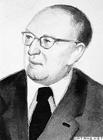
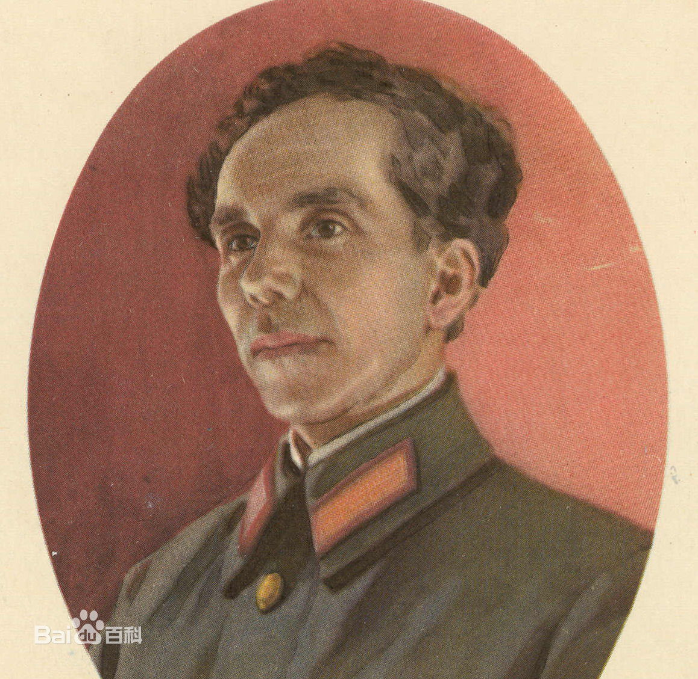
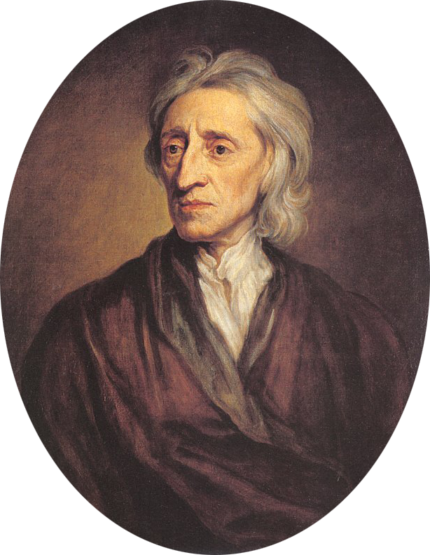

每一段未知的旅程，都是人生的风景。
在行走的路上，从未想过停下，以勇气启程，以初心做伴。
“出发”是一个很玄妙的词。它不见得是最初，也不见得很迅速。
它是未知，也是已知。你知道你不会停在这里，你会朝前走，你对自己和对前方都有期许。你不知道这是怎样的一条路，不知道走多久，不知道容易还是难。可是一动不动的话就太无趣了，那不像是一种好的态度。总觉得有什么被浪费了。
我们出发，皆因我们相信，也因为我们可以。
途中总会有这样那样的意外，也许错过了终点，也许走了远路，但这些都不必焦躁。
在这些过程中，你一定会有些收获。每一次路过，我都当作一站，贪婪地去观察一切。那里一定有些什么我可以在将来与你分享，一定有些什么可以让我不断成长。它像在浇灌我心里的树，为什么要限制自己生长的可能呢？我想我每一个瞬间都在准备着，看自己变成更好的自己。
最好逛的街是随便走走，就像最好的旅行就是住进那座城市。很多事情都随机乱序地发生了，在我把自己也当成一个未知数之后。
凡事没有完美，做任何事，难免有一些不尽如人意的事发生，它是证据，证明我们真的经过了那样的过程，带上它们，就是为了走更好的路。
没有目的的旅行才是最好的行程。
我还是我，10岁的我在成长，20岁的我在成长，今天的我依然如此。现在还不是回头看的时候，专注于受众的每一件事，做好现在，面对将来，这才是最重要的。
我的未来会怎样？学习，生活，不用刻意去计划，尽全力让自己继续下去。为了成为想要成为的人，努力加油就好了。
我们的现在，也是我们的未来。
By living your life one day at a time,you live all the days of your life.
一天接一天踏实的去生活，那你生活的每一天都是自己的生活。
I will forget so that I may live.
因为有了释怀，我会活得更加充实。
Don't let life slip through your fingers by living in the past or in the future.
感情有着极大的鼓舞力量，因此，它是一切道德行为的重要前提，谁要是没有强烈的志向，也就不能够热烈地把这个志向体现于事业中。
生活赋予我们一种巨大的和无限高贵的礼品，这就是青春：充满着力量，充满着期待志愿，充满着求知和斗争的志向，充满着希望信心和青春。
人生的磨难是很多的，所以我们不可对于每一件轻微的伤害都过于敏感。在生活磨难面前，精神上的坚强和无动于衷是我们抵抗罪恶和人生意外的最好武器。